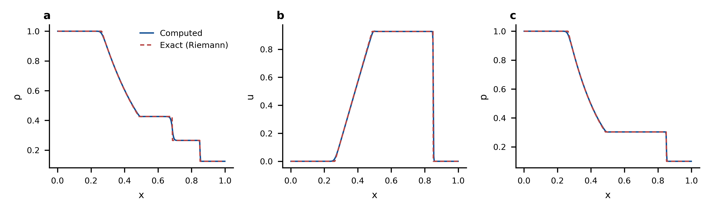
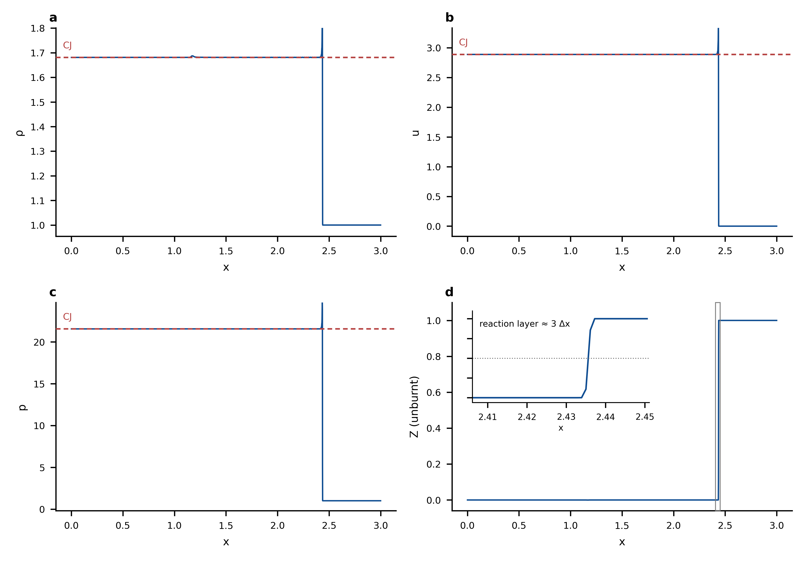
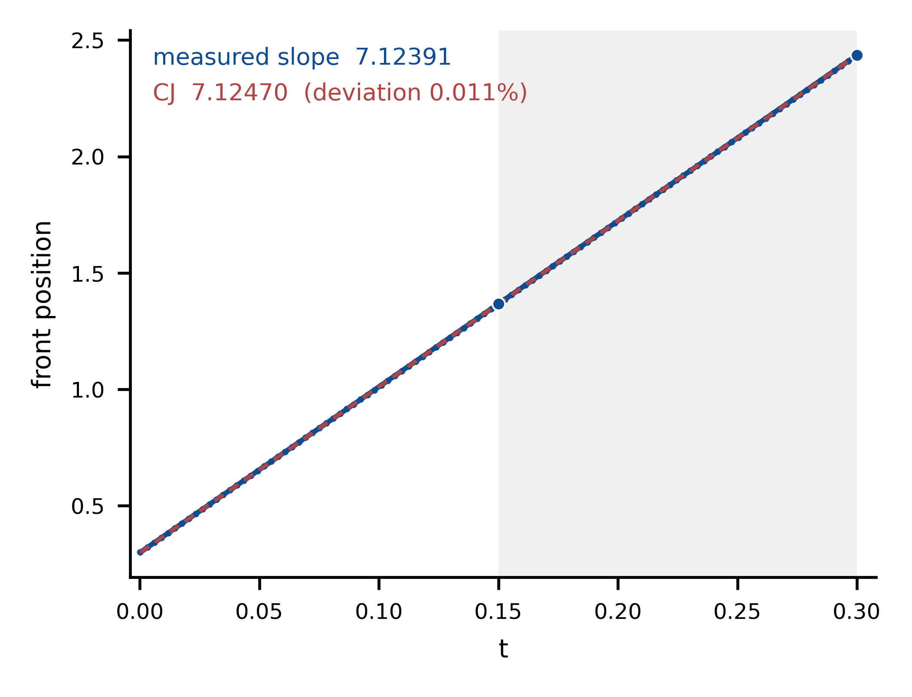
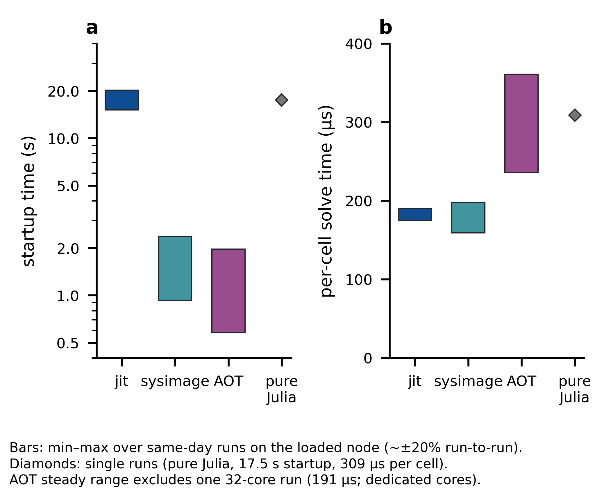
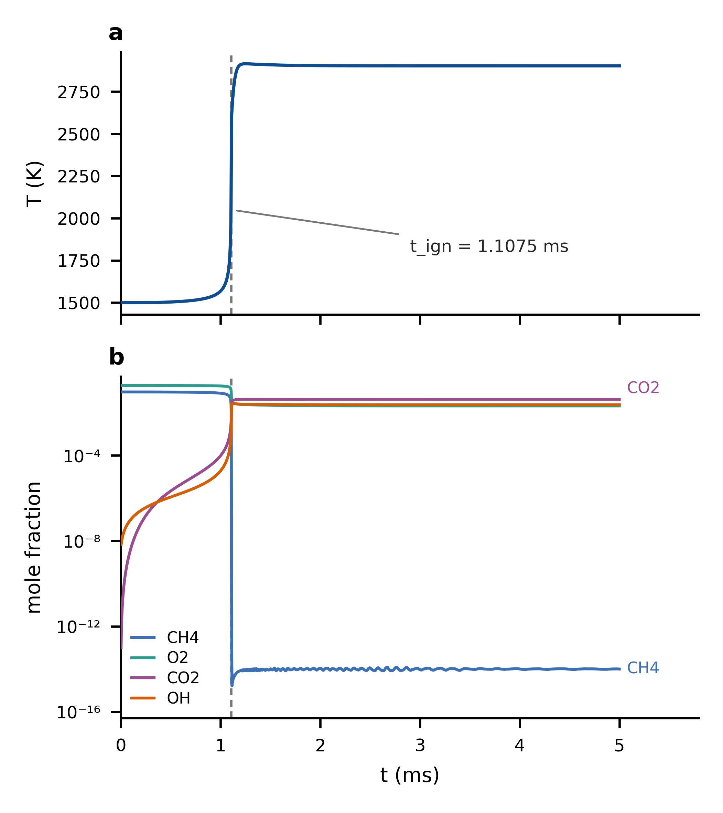
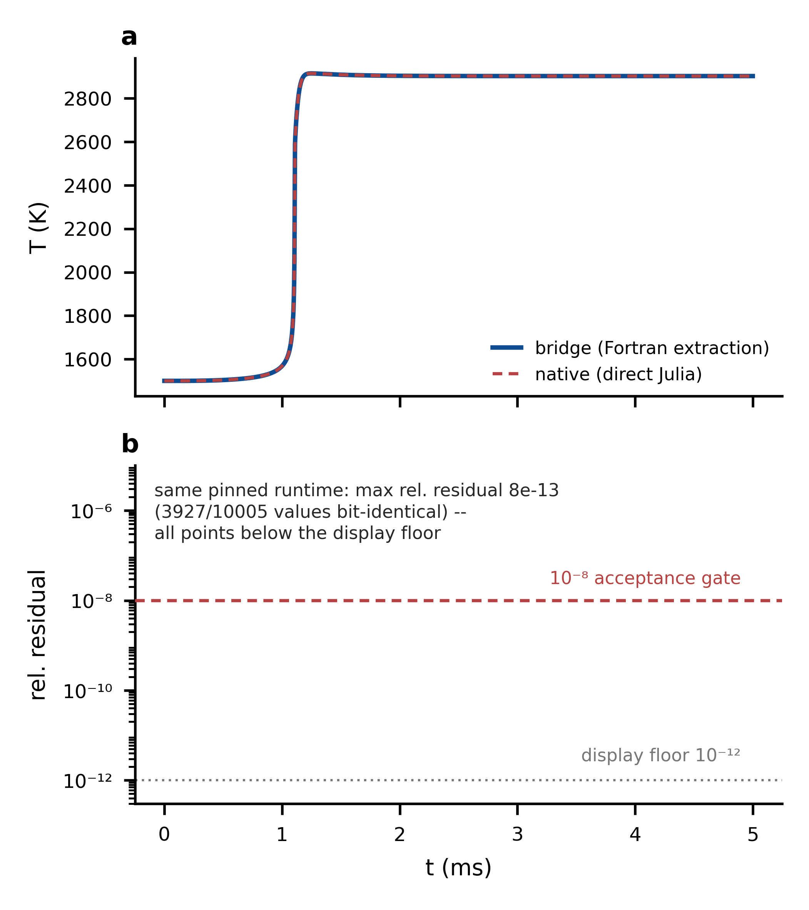
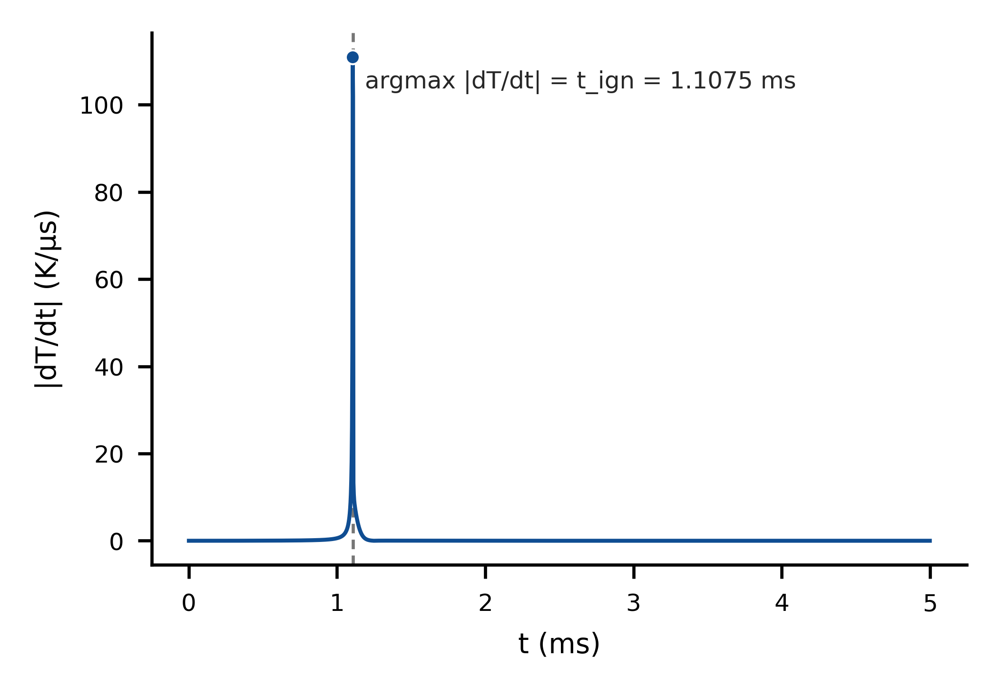
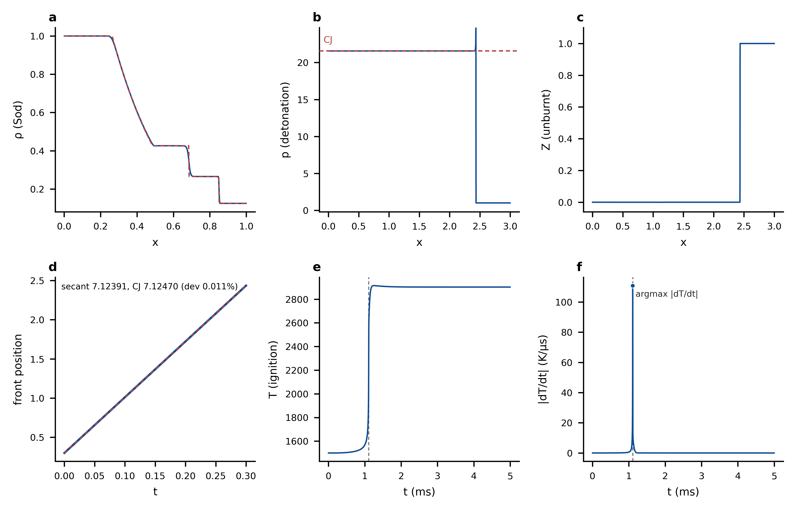

本附件仅以中文发布。
迁移自仓库内 examples/07_capstone/figures/FIGURES.md（2026-10-26
学术版）。全部数据、图表与结论一字未动；叙述中标识测量机器的表述
按公开文档规范做了通用化（统一为「共享构建主机」一类表述），命令
块中缩短的路径均有随文标注。
Capstone 图集讲解（学术版）¶
数据图 fig1–8 全部由 plot_capstone.py 从两个驱动
可执行与原生基准脚本写出的 CSV 数据文件（../output/*.csv，已
gitignore；# 元信息头 + 列名行 + 全精度逗号分隔值）渲染，PNG 600 dpi +
PDF，无手工后处理；性能常数在脚本内逐一标注 ../PERFORMANCE.md 出处行。
所有图共用同一编码约定：蓝色 = 数值/计算结果，红色虚线 = 解析参考
（参考线画在数据线上方，虚线缝隙露出下方数据，重合处以”红虚骑蓝实”
呈现）；物种身份（fig5b/fig6b）用独立的类别色板（见 fig5 节）。
再生成方式（共享构建主机上）：
cmake --build build --target ex_capstone_reacting_flow
cmake --build build --target ex_capstone_gri_ignition
./build/examples/ex_capstone_reacting_flow detonation 2700 0.3 sysimage # det 两件数据
./build/examples/ex_capstone_reacting_flow # sod 数据
cd build/examples
julia --project=../../scripts/sysimage_env \
../../examples/07_capstone/run_gri_native.jl # 必须用钉死的 1.12.7
./ex_capstone_gri_ignition # GRI 两件数据
cd ../../examples/07_capstone/figures && python3 plot_capstone.py
（注：上一命令块中的 julia 在源文档里写作指向安装路径的绝对路径，
此处按公开文档规范缩短——指 PATH 上的 Julia 1.12.7 二进制，
不要用 juliaup 的版本 shim。）
（--target 一次一个目标：本工程 CMake 下限 3.13，多目标单次 --build
是 3.15 起的语法。原生基线必须用与桥接可执行内嵌 libjulia 同版的
1.12.7 二进制生成——juliaup 的自动更新版本在点火过渡段漂移至
~10⁻⁵–10⁻³，会让 1e-8 验收门误报提取错误；run_gri_native.jl 内有
版本守卫直接拒绝。）
fig1_sod_transport — Sod 激波管三联图（ρ / u / p，183 mm 双栏）¶

数学模型与精确解¶
惰性输运路径验证的是一维 Euler 方程组的守恒形式
理想气体 \(p = (\gamma-1)\bigl(E - \tfrac12 \rho u^2\bigr)\)，\(\gamma = 1.4\)。
初值为经典 Sod / Toro Test 1 间断：左态 \((\rho,u,p) = (1,\,0,\,1)\)，
右态 \((0.125,\,0,\,0.1)\)，\(t = 0.2\)。该 Riemann 问题有闭式自相似解，
由五种波型之三构成：左行稀疏波扇（扇内各量是 \(x/t\) 的函数）、
接触间断（密度跳跃、压力与速度连续）与右行激波。中间星区
\((p_*, u_*)\) 由非线性方程 \(f(p_*) = 0\) 的 Newton 迭代求得（\(f\) 为
跨左、右波速度增量之差）；驱动内的求解器 sod_star_state 残差
\(\sim 1.1\times10^{-16}\)（机器精度），跨激波状态由 Rankine–Hugoniot
跳跃关系连接。图中红色虚线即该精确解的逐格采样。
数值方法与预期误差¶
数值解（蓝线）是一阶 Godunov 有限体积格式：分段常数重构 + 逐界面
精确 Riemann 通量（vendored Clawpack rp1 内核），\(n_x = 400\)，
\(\Delta x = 1.25\times10^{-3}\)。一阶格式的数值耗散把间断抹成宽度
\(O(\Delta x)\) 的过渡层——图中激波与接触间断处蓝线比红线”缓”正是此
效应，网格加密即收窄，属格式的预期行为而非错误。定量地，
\(L^1\) 误差（逐格对精确解）
为 \(\rho\ 1.89\times10^{-3}\)、\(u\ 2.49\times10^{-3}\)、 \(p\ 1.09\times10^{-3}\)，与一阶精度 \(O(\Delta x)\) 一致。守恒格式的 结构保证也同时被验证：质量与总能量漂移 \(\sim 10^{-13}\)（机器精度级）， 动量变化与出流边界的净压力冲量 \((p_L - p_R)\,t\) 严格对账 （\(0.180 = 0.180\)）。
物理图景¶
初始压差驱动气体向右流动：稀疏波把左端高压气等熵膨胀降压，接触面 （密度界面）与激波以不同速度右行；速度场在两波之间形成平台 \(u_*\) （接触面两侧速度、压力相等是界面无压差扰动的体现）。这张图成立即 说明：耦合化学之前，输运内核对非线性双曲守恒律的全部波系（光滑 扇、线性间断、非线性间断）都算对了。
fig2_detonation_structure — CJ 爆震结构四联（183 mm 双栏）¶

数学模型¶
验证算例为 HLW 2000 Ex.2：带单步 Arrhenius 放热源的反应 Euler 方程组
\(Z\) 为未燃反应物分数（\(Z=1\) 新鲜气体、\(Z=0\) 完全燃烧），\(\gamma=1.4\)， 比放热 \(q\) 取 HLW 参数。数值格式为 Strang 算子分裂（二阶时间精度）：
输运 \(\mathcal{T}\) 用无源 Godunov（rp1_reacting），化学 \(\mathcal{C}\)
是逐格刚性 ODE 求解——刚性与放热时间尺度相差量级，这正是交给 Julia
侧 Rodas5P（abstol \(10^{-10}\) / reltol \(10^{-8}\)）的部分。每个非空
化学半步跨 Fortran–Julia 桥一次批量调用（活跃格打包、冻结格跳过）。
物理图景：CJ 与 ZND 结构¶
自持爆震的经典图景是 ZND 模型：前导激波把未燃气 \((1,0,1,Z{=}1)\) 绝热压缩到 von Neumann 态（高压高温但尚未反应）；高温在诱导期内 指数放大 Arrhenius 源项，随后燃烧层内 \(Z\to 0\)、放热 \(q\) 转化为内能 与动能，支撑激波继续前进。稳态传播的终态由 Chapman–Jouguet 条件 唯一确定：Rayleigh 线（连接初态与终态、斜率由波速 \(D\) 决定的动量- 能量约束）与放热 Hugoniot 曲线相切，切点满足声速条件 \(u + c = D\)——即 CJ 点。该点给出解析参考值
怎么读这张图¶
a/b/c 三联（ρ/u/p）中红色虚线即上述 CJ 值。波后大段平台与三条参考线 重合，说明燃烧产物已松弛到 CJ 终态——定量偏差 \(\le 0.025\%\)（最差 u 0.025%、p 0.023%、ρ 0.018%）。前沿处 ρ/p 的小尖峰是 von Neumann 态的残余（被 \(O(\Delta x)\) 耗散部分抹平，\(n_x = 2700\)、 \(\Delta x = 1.11\times10^{-3}\)）。d 联的 Z 悬崖即反应层，inset 放大 显示其宽度仅 ≈3 个网格：诱导区 + 燃烧区在该分辨率下已接近可分辨 极限——这正是 HLW 采用修正分数步（避免分裂误差把薄反应层推错位置） 的动机，也是此算例成为耦合格式试金石的原因。
fig3_front_speed — 前沿轨迹与爆速（89 mm 单栏）¶

数学与测量协议¶
CJ 爆震以常速 \(s_{cj}\) 自持传播，故前沿轨迹 \(x_f(t)\) 应为直线。数值上
前沿位置由 Z=0.5 等值线定位：从右向左扫描找到第一个 \(Z<0.5\) 的格，
格内线性插值（front_x），每个输运步采样一次（2608 个样本）。测速
采用两点割线：
测速窗口刻意取后半程：起爆建立期内轨迹偏离直线（图左下角可见）， 属初始瞬态；后半程直线段才承载稳态波速信息。与 \(s_{cj} = 7.12470\) 的偏差为 0.011%——这是守恒格式数值耗散对波速的高阶小量影响； 按 Lax–Wendroff 型收敛定理，守恒相容格式随网格加密收敛到正确的 弱解传播速度，此处 0.011% 即 \(n_x = 2700\) 下的有限分辨率残差。
怎么读¶
珠串点 = 采样密度（细线连全部 2608 步，珠串每 25 步取一）；灰色底带 = 驱动的测速窗口；蓝色粗线 = 上述割线，两个白边圆点是测速端点 \((t_a, x_a)\)、\((t_b, x_b)\)；红色虚线 = 过同一终点、斜率 \(s_{cj}\) 的 CJ 参考线。红虚骑在蓝割线上方且缝隙对齐——两条线在图尺度上不可分， 本身就是”数值波速 = CJ 波速”的直接视觉证据。
fig4_performance — 四模式成本对比（89 mm 单栏）¶

数学/统计口径¶
- 启动时间（a 联，对数轴）：Julia 运行时与代码就绪的全部成本。 jit 模式需载入 ~92 个包缓存（15.1–20.2 s）；sysimage 把全部依赖 烤进 1.2 GB 镜像，只剩镜像载入（0.93–2.37 s，页缓存冷热差异）； AOT 自含库的 init 为 0.58–1.97 s（冷/热页缓存区间）；纯 Julia 参考实现 17.5 s（单次，菱形标记）。
- 稳态每格成本（b 联，线性轴，µs/格）：化学总时 ÷ 活跃格数 （25245 次格求解）。jit 175–190、sysimage 159–198、AOT 236–361、 纯 Julia 309 µs。
关键结论由两联对比给出：模式的差别全部集中在启动段（约一个量级
的分离）；稳态每格成本四组范围互相重叠、在主机负载噪声内不可区分
——因为热路径是同一份编译好的内核（FjKinetics.step_chemistry!，
Rodas5P），桥接本身每半步只增加 µs 级的调用解析开销。
统计判据（为何”重叠”是有意义的结论）¶
共享主机运行间噪声 ~±20%。判别两组差异是否真实，用的是同批背靠背 对比 + 批间方向翻转检验：若差值方向在不同批次间翻转（本仓库实测： 同批内 sysimage 4.02 s < jit 4.79 s，换 cwd 复跑 4.99 s > 4.43 s）， 则差异归属噪声而非模式效应。此外”零 JIT”由首个非空化学调用计时 证明：7.1–8.0 ms 为纯求解量级（若发生运行时编译，尖峰应为 100 ms–s 级），四个运行无一出现。
b 联唯一的数据排除已在图内脚注与 PERFORMANCE.md 记录：AOT 的一次 32 核独占物理核跑（191 µs）与 1 核共享主机跑不可比，不计入范围。
fig5_gri_ignition — GRI-Mech 3.0 均质点火（89 mm 双联）¶

数学模型¶
零维常容绝热均质反应器：53 组分 / 325 反应的 GRI-Mech 3.0 机理， 化学源项 \(\dot{\mathbf{Y}} = \boldsymbol{\omega}(\mathbf{Y}, T)\) 与能量 方程耦合（绝热、常容）。初值为当量比 \(\phi = 1\) 的 CH4/空气， 1500 K、1 atm。系统刚性（诱导期链支反应与放热时间尺度相差量级）， 由 FBDF（reltol \(10^{-8}\) / abstol \(10^{-12}\)）积分，均匀 saveat 2001 点（\(\Delta t = 2.5\,\mu\)s）。点火判据采用 ChemMechSim 验证口径： \(|dT/dt|\) 最陡段之后的第一个格点，即 \(t_\mathrm{ign} = 1.1075\) ms（图中 a 联灰色虚线）。
物理图景¶
诱导期（约 1.1 ms）内链支反应缓慢积累自由基（OH 从 \(\sim10^{-51}\) 指数增长，b 联左下缘之外），CH4/O2 几乎不变、T 维持 1500 K 平台； 热失控的陡升段（\(>5\) K/µs）宽约 0.05 ms，把温度推至约 2780 K 后 继续攀升，至 \(t \approx 1.25\) ms（\(t_\mathrm{ign}\) 之后约 0.14 ms； 2900 K 于 \(t \approx 1.18\) ms 越过）达过冲峰 2914.9 K；CH4 耗尽到 \(10^{-14}\)、CO2 生成至 0.043；随后自由基池部分复合，弛豫到平衡 （\(T_\mathrm{end} = 2902.6\) K，OH 平衡摩尔分数 0.024——高温解离使 CO/H/O 组分留存，碳并不全部进入 CO2）。b 联四个关键物种：反应物 （CH4 蓝 / O2 青绿）单调衰减，产物（CO2 紫）生成，自由基（OH 朱红） 在点火层内成峰后弛豫到非零平衡值——四条曲线形状互异，本身就是 色彩之外的辨识编码。
显示与色板约定¶
log 轴显示下限 \(10^{-16}\)：机理初始化使诱导期 CO2/OH 一度低至 \(\sim10^{-71}/10^{-51}\)，跨越它们的 log 轴毫无可读性；下限之下仅 2 个采样点（渲染审计有计数），而下限仍完整容纳 CH4 的全程衰减 （最低 \(1.65\times10^{-15}\)；脚本内断言高于下限并打印实测值， 不转写常数）。线端直接标注只放在 log 几何上孤立的 位置（CH4、CO2）；O2/OH 线端相距不足半个数量级，由图例与曲线形状 承载。物种类别色板（#3B6FB6 / #2A9D8F / #9A4D8E / #D55E00）经 dataviz 六项校验器全对通过；紫–蓝对 protan ΔE 7.5 落在 6–8 地板带， 按规则以次级编码（图例 + 直接标注 + 互异形状）合法化。
fig6_bridge_vs_native — 桥接 vs 原生逐点对照（89 mm 双联）¶

对照协议¶
同一条 FjKinetics 调用路径在两个独立进程各跑一遍：原生
（run_gri_native.jl 直接 Julia）与桥接（Fortran 示例经桥批量提取
ts/T/X 后自行落盘）。协议的运行时前提：原生基线必须由与桥接
可执行内嵌 libjulia 同版的 Julia 1.12.7 生成，
run_gri_native.jl 的版本守卫直接拒绝其他版本。来历（审查波实测）：
跨版本生成基线时，同一求解在点火过渡段逐点漂移至
\(10^{-5}\)–\(10^{-3}\)（1.12.7 vs 1.13.2：T 相对差 \(1.5\times10^{-5}\)，
过渡段 CH4 相对差达 0.54），端值门余量随版本对波动——juliaup 基线
曾给出 0 / \(1.7\times10^{-9}\) / 0 / \(6.8\times10^{-9}\)（离门仅
1.5 倍），下一次 juliaup 自动更新即可越门，并误报为”桥提取错误”。
a 联 T(t) 叠加沿用家族语义（蓝实 = 桥接、红虚 = 原生在上，”红虚骑
蓝实”读作重合）。b 联逐点相对残差
\(|\Delta q| / \max(|q_\mathrm{native}|, 10^{-10})\)：分母条件化下限
——对 \(10^{-71}\) 量级的痕量值做相对残差是数字游戏，条件化后退化为
缩放绝对差沉入显示底（低于 \(10^{-12}\) 的点屏蔽并计数，不以假下限
呈现）；红色虚线为验收门 \(10^{-8}\)，灰色点线为显示底 \(10^{-12}\)。
结果怎么读¶
- 验收四门恰好为零（t_ign、T_end、X(CH4,0)、X(CO2,end) 全部 rel diff = 0，逐位相等）：钉死运行时后收敛标量完全复现。
- 全序列最大相对残差 \(8.3\times10^{-13}\)（出现在 CO2 点火前 陡升段 \(t \approx 1.01\) ms；T 本身仅 \(\sim2\times10^{-16}\)，ULP 量级），2001×5 个值全部低于 \(10^{-12}\) 显示底——b 联空面板即 结果本身。3927/10005 个值逐位相同，其余微小差异来自同一运行时 内两个进程的符号代码生成项序差，不是提取误差。
- 桥接提取通道因此被隔离证真：
to_fortran是双精度整块拷贝、CSVes26.16e3十进制往返无损；布局类 bug（列主序错位、物种行取错） 的特征误差在 \(10^{-1}\) 量级，比门高七个数量级——四门的 0 就是 提取路径的指纹。
fig7_heat_release — 放热率判据 |dT/dt|（89 mm 单栏）¶

量的定义¶
直接绘制驱动判据量：相邻采样段前向差分 \(|\Delta T / \Delta t|\)
（2000 段、取段中点，无平滑、无平均——与 Fortran 侧 maxloc 完全
同口径；脚本内断言 argmax 段后格点与 CSV 头部 t_ign 严格一致，
1.1075 ms）。诱导期前段（\(t \lesssim 0.25\) ms）\(|dT/dt| < 0.005\)
K/µs，此后随链支反应加速单调爬升（0.8 ms 处 0.10、1.0 ms 处
0.58 K/µs），点火处峰值 110.9 K/µs，随平衡趋近衰减回零。
圆点 = argmax 段，灰虚线 = t_ign：峰即点火，
与 fig5a 的温度台阶一一对应。
fig8_capstone_overview — 收官总览（183 mm 2×3）¶

一页看全整个 capstone，六联全部是已审计数据的重绘（无新数据通道）： a Sod ρ vs 精确 Riemann 解（输运内核，fig1）；b 爆震 p + CJ 参考线、c Z 反应层悬崖（Strang 分裂耦合格式，fig2）；d 前沿 轨迹 + 两点割线 vs CJ 参考线（传播速度 0.011%，fig3）；e GRI 点火 T(t) + t_ign、f |dT/dt| + argmax 圆点（化学动力学与判据， fig5/fig7）。两个可执行、五份 CSV、一张图。
fig0_schematic — 耦合架构示意图¶
（本节为 AI 生成概念草图预留：该图在本页迁移时尚未生成。其为概念
示意（mechanism/architecture draft），不承载定量数据；生成后，图与
provenance 记录将收录在仓库 examples/07_capstone/figures/fig0_schematic/。）
参考文献¶
- Sod, G. A. (1978). A survey of several finite difference methods for systems of nonlinear hyperbolic conservation laws. Journal of Computational Physics, 27(1), 1–31.
- Toro, E. F. (2009). Riemann Solvers and Numerical Methods for Fluid Dynamics (3rd ed.), §4.5（精确 Riemann 求解器）及 Test 1。Springer.
- Helzel, C., LeVeque, R. J., & Warneke, G. (2000). A modified fractional step method for the accurate approximation of detonation waves. SIAM Journal on Scientific Computing, 22(4), 1489–1510. （Ex.2 算例与修正分数步来源。）
- LeVeque, R. J. (2002). Finite Volume Methods for Hyperbolic Problems. Cambridge University Press.（波传播算法 / Clawpack 内核。）
- Strang, G. (1968). On the construction and comparison of difference schemes. SIAM Journal on Numerical Analysis, 5(3), 506–517. （算子分裂的二阶性。）
- Fickett, W., & Davis, W. C. (1979). Detonation: Theory and Experiment. University of California Press.（CJ 条件、Rayleigh 线–Hugoniot 几何 与 ZND 结构的标准参考；ZND 原始工作见 Zel’dovich (1940)、 von Neumann (1942)、Döring (1943)。）
- Rackauckas, C., & Nie, Q. (2017). DifferentialEquations.jl — a performant and feature-rich ecosystem for solving differential equations in Julia. Journal of Open Research Software, 5(1). （化学侧刚性 ODE 栈，Rodas5P/FBDF。）
- Smith, G. P., Golden, D. M., Frenklach, M., Moriarty, N. W., Eiteneer, B., Goldenberg, M., Bowman, C. T., Hanson, R. K., Song, S., Gardiner, W. C., Jr., Lissianski, V. V., & Qin, Z. (1999). GRI-Mech 3.0. http://www.me.berkeley.edu/gri_mech/ （fig5–8 的甲烷氧化 机理。）
QA 附录¶
每张图附带两份审计 JSON（随图提交）：*.alignment.json（渲染时面板
对齐门，1.5 pt 容差；fig7 单面板，不适用）与 *.collision-audit.json
（PDF 几何碰撞审计）。字形审计（5 pt 底线）在提交的 PDF 上执行，
全部 PASS；最小字形 5.5 pt。产物按用户契约为 PNG 600 dpi + PDF
（不导出 SVG/TIFF，为记录在案的契约豁免）。数据完整性：全部数据
点全绘、无平滑、无平均；记录在案的排除有三处 —— AOT 32 核跑
（fig4，图内与本文件双重记录）、fig5b 物种摩尔分数显示下限
（X < 10⁻¹⁶ 的点不进折线：对数轴下方数值无显示意义，且未遮蔽的
折线顶点会在 PDF 路径几何中越出坐标框）、fig6b 残差显示遮蔽
（分母条件化用 10⁻¹⁰ 地板，r < 10⁻¹² 的点不进折线，同理）。两处
显示下限遮蔽的点数与遮蔽率由脚本打印，属显示层选择而非数据排除。
对数轴刻度标签用全字号 Unicode 上标（10⁻¹⁶ 等）而非 mathtext
指数 —— mathtext 指数字号约为主字号的 70%（6 pt 刻度下 4.2 pt，
低于 5 pt 字形底线）。